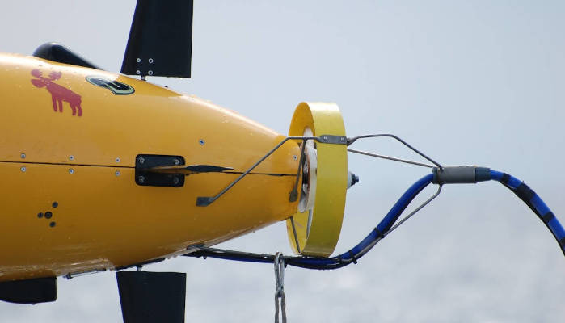

Open Ocean Software Community Day UK: 4 September 2026
Updates
The final detailed Agenda can be downloaded here, and a paper copy will be provided at registration.
Agenda
Agenda at a glance (download the full agenda using the button above):
- 8:30-9:00: Registration at NOC main reception (coffee available)
- 9:00-12:00: Morning session [technical program] (with morning coffee break)
- 12:00-13:30: Lunch on your own (reserved area available at NOC cafeteria)
- 13:30-16:10: Afternoon session [community discussion] (with afternoon coffee break)
Overview

Do you develop, maintain or use open source software (OSS) on your AUVs, ASVs, ROVs, etc.?
Open Ocean Software would like to invite you to our first community day at the National Oceanography Centre in Southampton, UK, where you can expect focused talks, in-depth discussions, and plenty of time for networking in a single-track format. This is also your chance to have early feedback on the goals and implementation of the Open Ocean Software organization.
Open Ocean Software is a new initiative to support building ecosystems around OSS for marine robots to improve technical quality, security, maintainability, documentation, interoperability, and to build a vibrant human community around the topic. Open Ocean Software is led by a team of collaborators who have collectively spent decades deploying AUVs in diverse real-world environments running a range of OSS projects. We are currently funded by the US National Science Foundation under the Pathways to Enable Open-Source Ecosystems (POSE) initiative.
This workshop will take place on Friday, 4 September 2026, directly following the IEEE OES AUV Symposium, also held in Southampton.
Call for Presentation Abstracts
We invite you to submit an abstract for a technical talk using the link below. These abstracts will be reviewed by the technical committee and accepted talks will be included in one of these tracks:
- Lightning talk [CLOSED]: A very brief talk intended to introduce the audience to your topic for fruitful discussions later in the day and beyond.
- Standard talk [CLOSED: abstracts were due 17 July]: A standard-length conference talk focusing on your development or use of open source in your marine robotics work.
We are interested in a wide range of topics that both include open source software, and applies to marine robots or related technologies: sensors, data acquisition, simulation, and more.
You do not need to be an author of the OSS project to present how it has been useful (or not) to your application. Also, we are interested in learning from failures, false starts, and critiques as much as successes.
Registration
Registration fees are inclusive of both coffee breaks but not lunch.
| Category | Cost |
|---|---|
| Early Bird - Regular (before 1 Aug 2026, 11:59 pm BST) | £35 |
| Early Bird - Student/Early Career (before 1 Aug 2026, 11:59 pm BST) | £20 |
| Regular (after Early Bird deadline) | £40 |
| Student/Early Career (after Early Bird deadline) | £25 |
Please register early so we can get accurate attendance numbers to plan accordingly.
Key Dates
- 17 July 2026: Standard talk Abstract deadline [CLOSED]
- 29 July 2026: Authors notified for Standard talks
- 1 August 2026: Early bird registration deadline
- [1-3 September 2026: IEEE OES AUV 2026]
- 4 September 2026: Open Ocean Software Community Day!
Want to stay informed?
Would you like to be reminded by email of key updates to this event or notifications for new ones? Subscribe to our infrequent email newsletter:
Sponsors
This event is hosted graciously by the National Oceanography Centre.
Financial support provided by the U.S. National Science Foundation and our corporate sponsors:
Questions?
Email events@oceansoft.org.